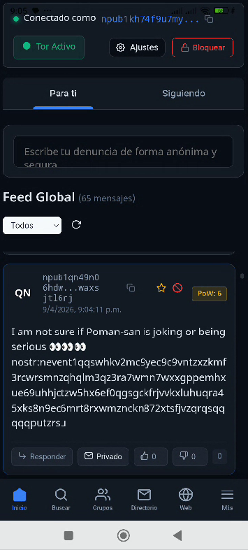

Votre Voix est l'Arme. Nous sommes le Bouclier.
Vault n'est pas une entreprise. C'est un protocole mathématique.
Nous avons conçu ce réseau public décentralisé spécifiquement pour signaler la corruption, voler des documents gouvernementaux et des abus corporatifs sans laisser de traces.
- Garantie Zero-Knowledge: Vos messages multimédias traversent le Dark Web (Tor v3) de manière native. Nous ne savons pas qui vous êtes.
- Amnistie Médico-légale: L'application supprime les matrices de vos photographies téléchargées et détruit les coordonnées GPS, les modèles d'appareils photo et les horodatages.
- Totalement Décentralisé: Base de données P2P protégée par le protocole Nostr et IPFS. Personne ne peut effacer un enregistrement une fois transmis.
Qu'est-ce que VAULT?
Vault est un client de communication conçu pour survivre à des interventions étatiques. Contrairement aux plateformes (Signal, Telegram), Vault n'a pas de "Serveurs Centraux" pouvant être piratés ou saisis.
Anatomie du Système
- Routage Oignon: Tout le trafic est cryptographiquement forcé via un tunnel SOCKS5 local, rebondissant votre trafic sur le Réseau Tor.
- Identité Jetable (Kamikaze): Sans numéros de téléphone ni e-mails. Lancez votre fuite puis détruisez les clés générées localement.
- Agnosticisme Physique: Au lieu du DNS, Vault interroge des centaines de relais publics. Si votre pays censure 20 serveurs, le réseau commute de manière transparente vers 50 autres à travers le monde.

Obtenir l'Exécutable
⚠️ Vérifiez toujours la signature SHA-256 ci-dessous avant de procéder aux installations.
> sha256sum Vault-Release-Signed.apk
e3b0c44298fc1c149afbf4c8996fb92427ae41e4649b934ca495991b7852b855
Coupez une tête, il en poussera deux.
Ce domaine Clearnet est sous la surveillance de l'État. La survie de Vault dépend de vous. Téléchargez le site entier localement et diffusez-le sur des serveurs, des réseaux P2P ou IPFS.
git clone https://github.com/TUDOMINIO/vault-portal.git